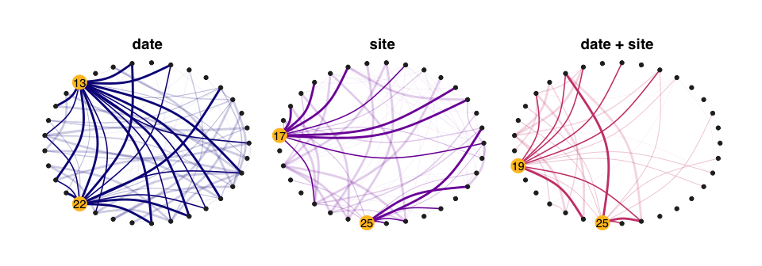

EMtree infers interaction networks from abundance data. It uses averages over spanning trees within a Poisson log-Normal Model (PLNmodels), and involves plotting funcitonalities (using
ggraphandtydigraph).
Example with Fatala river fishes
This is a basic example which shows you how to infer a network, using Barans95 data from the ade4 package.
Data
library(ade4)
library(tidyverse)
data(baran95)
counts = as.matrix(baran95$fau)
covar = as_tibble(baran95$plan)
n = nrow(counts)
p = ncol(counts)head(counts)
#> AMA CAS CHI CHL CJO CST CTR CWA CYS DAF EFI ELA GDE GME HFA HFO IAF LFA
#> 1 0 2 0 3 0 0 0 0 0 0 71 1 5 6 0 0 7 3
#> 2 0 1 0 0 0 0 0 0 0 0 118 2 3 0 0 0 8 1
#> 3 0 2 0 3 0 0 0 0 0 0 69 0 6 2 0 0 8 3
#> 4 0 0 0 2 0 0 0 0 0 0 56 0 0 0 0 0 1 0
#> 5 0 0 0 0 0 0 0 0 3 0 0 1 1 0 0 0 2 2
#> 6 0 0 0 0 0 0 0 0 5 0 0 0 2 0 0 0 0 0
#> LGR LNI PAA PBR PEL PJU PLE PMO POQ PPA PQQ PTY SEB TIN TLE
#> 1 3 0 0 5 2 9 26 0 4 0 0 0 22 0 2
#> 2 7 0 0 0 0 0 113 0 1 0 0 1 18 0 1
#> 3 0 0 0 1 0 3 0 0 1 0 0 0 3 0 0
#> 4 2 0 0 0 0 0 0 0 0 0 0 0 15 0 0
#> 5 5 0 0 0 3 0 0 0 4 0 0 3 0 0 0
#> 6 9 0 0 2 4 4 0 2 0 0 0 1 0 0 0
head(covar)
#> # A tibble: 6 x 2
#> date site
#> <fct> <fct>
#> 1 apr93 km03
#> 2 apr93 km03
#> 3 apr93 km03
#> 4 apr93 km03
#> 5 apr93 km17
#> 6 apr93 km17Run EMtree function
library(EMtree)
set.seed(3)
output<-EMtree(model, maxIter = 10, plot=TRUE)
#> [1] 0.7157895
#>
#> Likelihoods: 81.60106 , 81.68395 , 81.684 ,
#>
#> Convergence took 0.64 secs and 3 iterations.
#> Likelihood difference = 5.399854e-05
#> Betas difference = 2.305752e-09
str(output)
#> List of 6
#> $ edges_prob : num [1:33, 1:33] 0.00 6.78e-05 3.17e-03 7.09e-02 2.84e-03 ...
#> $ edges_weight: num [1:33, 1:33] 0 0.000946 0.000946 0.000947 0.000946 ...
#> $ logpY : num [1:3] 81.6 81.7 81.7
#> $ maxIter : num 3
#> $ timeEM : 'difftime' num 0.642226934432983
#> ..- attr(*, "units")= chr "secs"
#> $ alpha : num 0.716Foster robustness with resampling :
library(parallel)
resample_output<-ResampleEMtree(counts=counts, covar_matrix = covar$site , S=5, maxIter=10,cond.tol=1e-8, cores=1)
#>
#> S= 1 [1] 0.7236842
#>
#> Convergence took 0.23 secs and 5 iterations. 0.7236842
#> S= 2 [1] 0.6052632
#>
#> Convergence took 0.16 secs and 3 iterations. 0.6052632
#> S= 3 [1] 0.6973684
#>
#> Convergence took 0.32 secs and 7 iterations. 0.6973684
#> S= 4 [1] 0.7894737
#>
#> Convergence took 0.13 secs and 3 iterations. 0.7894737
#> S= 5 [1] 0.8815789
#>
#> Convergence took 0.26 secs and 6 iterations. 0.8815789
str(resample_output)
#> List of 3
#> $ Pmat : num [1:5, 1:528] 3.86e-03 5.74e-03 4.27e-04 5.08e-05 2.41e-05 ...
#> $ maxIter: num [1:5] 5 3 7 3 6
#> $ times : 'difftime' num [1:5] 0.230384111404419 0.160486936569214 0.315670013427734 0.13437294960022 ...
#> ..- attr(*, "units")= chr "secs"Several models with resampling :
library(parallel)
tested_models=list("date","site",c("date","site"))
models_names=c("date","site","date + site")
compare_output<-ComparEMtree(counts, covar_matrix=covar, models=tested_models, m_names=models_names, Pt=0.15, S=3, maxIter=5,cond.tol=1e-8,cores=1)
#>
#> model date
#> S= 1 [1] 0.2894737
#>
#> Convergence took 0.24 secs and 5 iterations. 0.2894737
#> S= 2 [1] 0.2763158
#>
#> Convergence took 0.19 secs and 4 iterations. 0.2763158
#> S= 3 [1] 0.2368421
#>
#> Convergence took 0.24 secs and 5 iterations. 0.2368421
#> model site
#> S= 1 [1] 0.7236842
#>
#> Convergence took 0.21 secs and 5 iterations. 0.7236842
#> S= 2 [1] 0.6052632
#>
#> Convergence took 0.14 secs and 3 iterations. 0.6052632
#> S= 3 [1] 0.6973684
#>
#> Convergence took 0.21 secs and 5 iterations. 0.6973684
#> model date + site
#> S= 1 [1] 0.9473684
#>
#> Convergence took 0.22 secs and 5 iterations. 0.9473684
#> S= 2 [1] 0.9868421
#>
#> Convergence took 0.21 secs and 5 iterations. 0.9868421
#> S= 3 [1] 0.9868421
#>
#> Convergence took 0.21 secs and 5 iterations. 0.9868421
str(compare_output)
#> Classes 'tbl_df', 'tbl' and 'data.frame': 1584 obs. of 4 variables:
#> $ node1 : chr "2" "3" "3" "4" ...
#> $ node2 : chr "1" "1" "2" "1" ...
#> $ model : chr "date" "date" "date" "date" ...
#> $ weight: num 0 0 0 0 0 ...Graphics
From ResampleEMtree output
draw_network(df,"Site", layout="nicely")$graph_data
#> # A tbl_graph: 33 nodes and 88 edges
#> #
#> # An undirected simple graph with 1 component
#> #
#> # Node Data: 33 x 8 (active)
#> btw bool_btw bool_deg deg title name label finalcolor
#> <dbl> <lgl> <lgl> <dbl> <chr> <int> <chr> <lgl>
#> 1 27.8 FALSE TRUE 8 Site 1 "" FALSE
#> 2 34.5 FALSE TRUE 4 Site 2 "" FALSE
#> 3 0 FALSE TRUE 2 Site 3 "" FALSE
#> 4 0 FALSE TRUE 4 Site 4 "" FALSE
#> 5 0 FALSE TRUE 3 Site 5 "" FALSE
#> 6 28.5 FALSE TRUE 4 Site 6 "" FALSE
#> # … with 27 more rows
#> #
#> # Edge Data: 88 x 6
#> from to weight btw.weights neibs title
#> <int> <int> <dbl> <dbl> <lgl> <chr>
#> 1 1 4 0.2 5 FALSE Site
#> 2 1 7 0.4 2.5 FALSE Site
#> 3 1 8 0.2 5 FALSE Site
#> # … with 85 more rowsFacet for plotting several models in one shot
Comparing network by eye is difficult. In particular, choosing the right layout to do so is often troublesome. Here by default, the circle layout is used so that differences in density are easily seen.

However, the user can decide another layout. The nodes position is preserved along the networks.
compar_graphs(compare_output,alpha=FALSE, layout="nicely", curv=0.1, base_model="site")$G
#> Using `nicely` as default layout